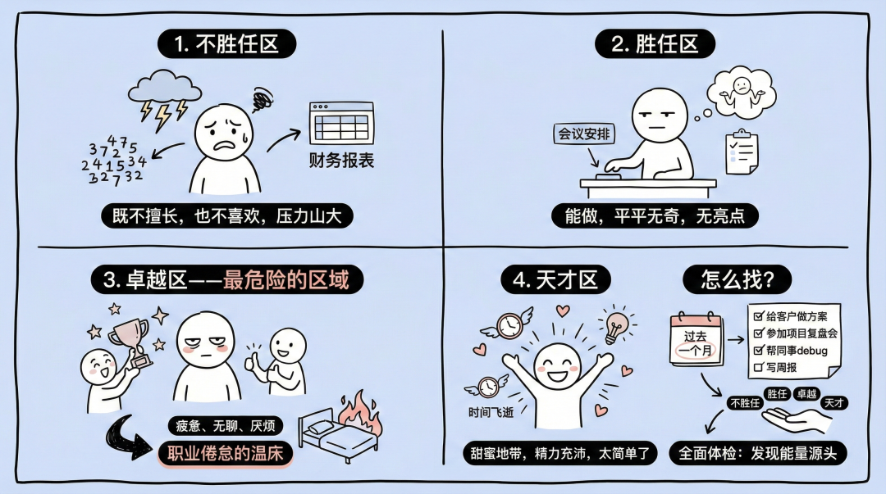
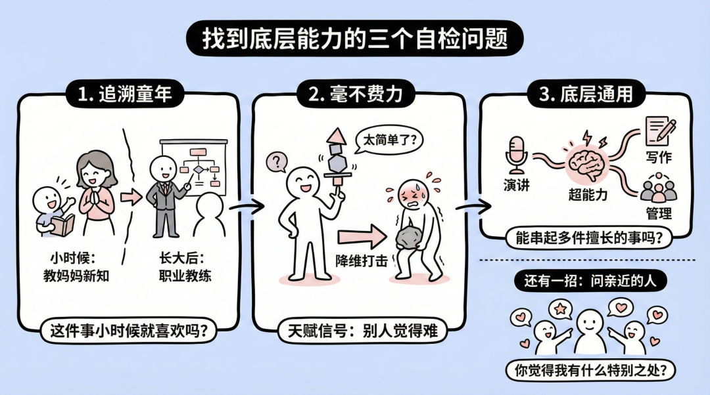
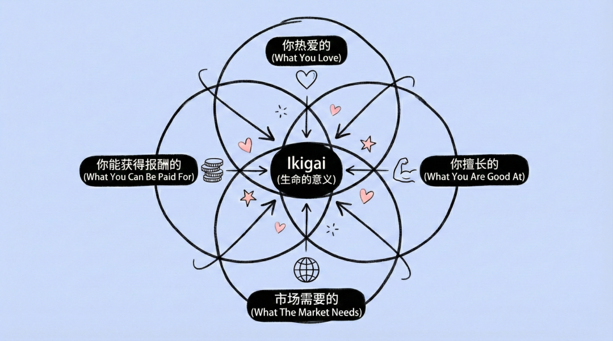
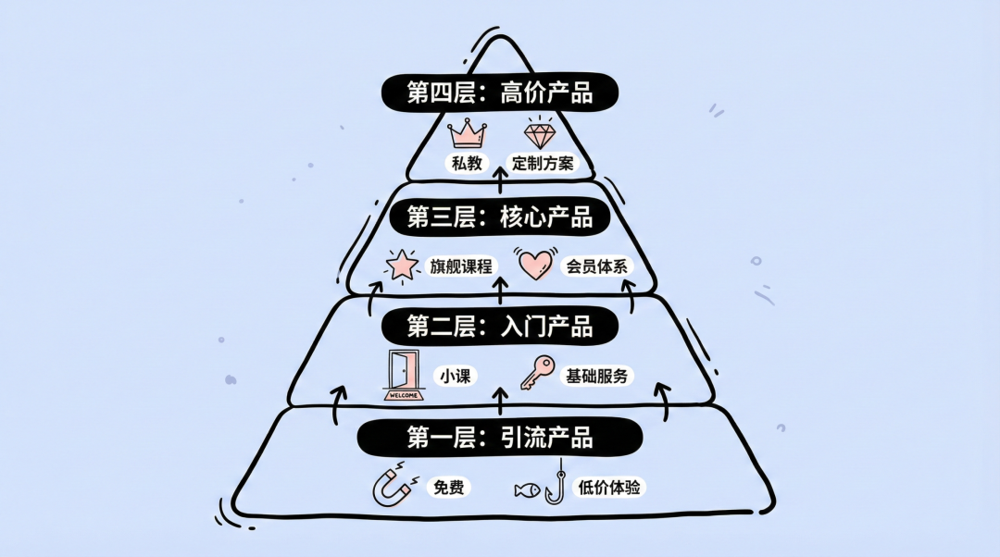
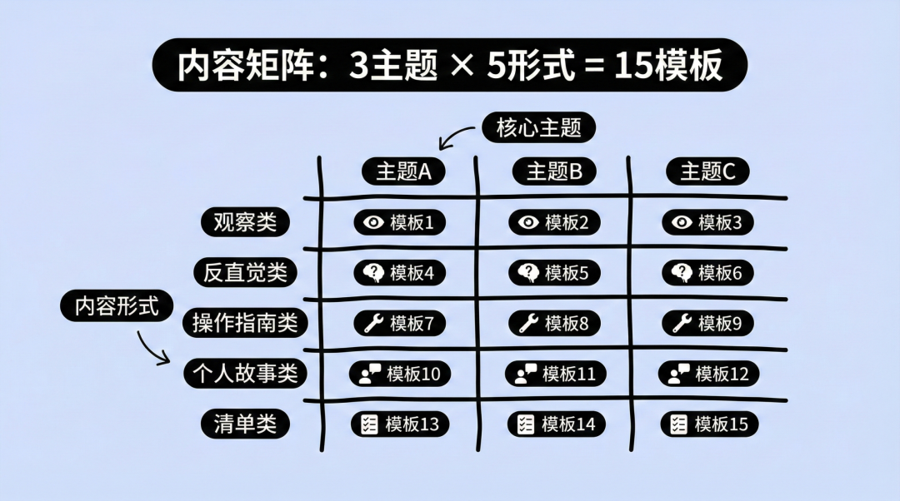
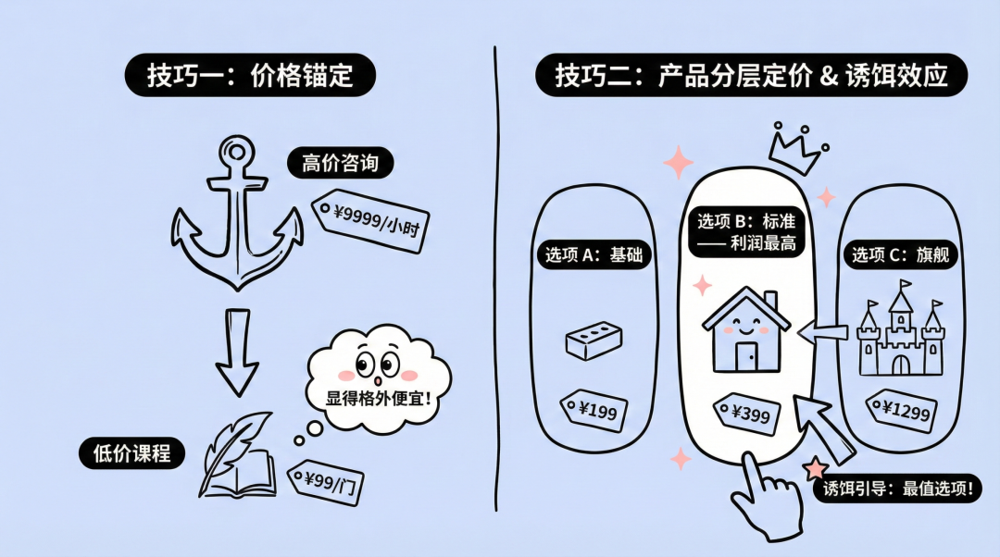

你有没有过这种念头？
工作好几年，有点行业经验，简历拉出来挺好看，每一段经历都能聊两句。
但越干越觉得，现在这份工作好像不是自己真正想要的。想出去做点什么，又不知道做什么。
曾经不止一次的做过个人复盘，比如做个咨询、培训、做自媒体、搞个副业……
每次列完，看着一屏幕的选项，反而更迷茫了。每个方向你好像都能做，但每个方向都只能写到大概能做，写不出为什么非我不可。
问题不在你想得不够多。问题在你这些年一直在加技能，却从来没有选一个主线任务。能力不是不够，是太杂了，杂到自己都看不清哪个才是核心。
一人公司的本质，是用最小的杠杆撬动最大的价值。这根杠杆的支点，就是你的个人优势。
找到个人优势，每一步都事半功倍。
接下来的只需要四个步骤，帮你从已有的所有能力里，找到那个最值得 all-in 的支点。
第一步：给自己做一次体检
我们每天都在工作，日程表被填得满满当当。
却很少有人停下来问一句：这些事情，到底是在消耗我，还是在滋养我？
大多数人有个误区——觉得只要日历排满，就是在创造价值。
事实是，忙和有效是两码事。大家都很忙，但忙的方向对不对，这个问题很少有人认真想过。
心理学家盖伊·亨德里克斯提出过一个概念，叫天才地带。
他的观点很直接：你能做的事情很多，但值得你去做的，只有一小部分。你应该把精力集中在那些让你充满活力的任务上。那些你只是还行的，能砍就砍。

他把人的活动分成四个区域：
1、不胜任区。
这些事你既不擅长，也不喜欢，做起来压力山大。
比如有些人天生讨厌数字，却硬着头皮做财务工作，每次一打开Excel就头疼。
2、胜任区。
你能做，但做得平平无奇。别人也能做，你没有任何特别之处。
比如你可以安排一场会议，但也仅仅是安排了。没有亮点，纯粹是完成任务。
3、卓越区，也是最危险的区域。
你做得比大多数人好，别人夸你，老板器重你。
但问题是——你不喜欢。
做这件事的时候，你感到疲惫、无聊、甚至隐隐的厌烦。长期待在这个区域，只会产生职业倦怠。
4、天才区。
这是能产生心流的区域。做这些事的时候，时间飞逝，精力充沛，甚至会有一种困惑：这事儿太简单了，别人怎么觉得难？
这就是你的天才地带。
怎么找？
拿出笔记本，回顾过去一个月。把你做的所有事情列出来，颗粒度尽可能细一点。
不要写工作，要写拆解到最小单元的动作：给客户做方案、参加项目复盘会、做活动策划、写文案等。
你可以轻松列出50到100项活动。
然后，给每一项打上标签：不胜任、胜任、卓越、天才。
这个过程，就像给自己做一次全面体检。
你会发现，有些你以为很重要的事情，其实一直在吸走你的能量。有些你从未重视的小事，恰恰是让你神采奕奕的源头。
第二步：如何挖掘你的底层能力
列完清单，你可能已经有了一些天才活动的候选名单。
但这还不够。
因为活动只是表象。真正重要的，是藏在冰山下的底层能力。
拿公司的HR培训讲课举例。
假设你发现自己特别擅长给新人做入职培训。每次站在白板前讲解公司流程，你都神采飞扬，同事们也听得津津有味。
这是你的天才区域。但关键问题来了：是什么让你这么擅长？
是因为PPT做得好？可能不是。声音洪亮？也不一定。
真正的超能力，往往藏得更深。
也许你天生擅长把复杂的东西讲简单——一团乱麻的信息，你三句话就能讲清楚。
也许你有极强的同理心——你能感知到听众的困惑，在他们开口提问之前，就把答案递过去。
这两种能力，都不局限于培训这个场景。
一旦你确认了它们的存在，就可以迁移到任何需要这种能力的地方：写产品文档、做路演、设计用户引导流程、甚至录制付费课程。
活动是具体的，底层能力是通用的。
找到底层能力的三个自检问题。

1、追溯童年——这件事你小时候就喜欢吗？
有一位创业教练回忆说，他从小就有一个习惯：每次在学校学到新东西，回家一定要教给妈妈。这不是作业，纯粹是他觉得讲出来特别有成就感。
几十年后，他成了职业教练，帮创始人理清思路。
本质上，他还是那个喜欢把东西教给别人的小孩。
2、毫不费力——你是不是觉得太简单，甚至不理解别人为什么觉得难？
这种感觉就是一个信号。
当某件事对你来说轻而易举，别人却需要费尽力气，说明你有一种他们没有的天赋。这就是降维打击。
3、底层通用——这个能力能串起好几件你擅长的事吗？
如果一项能力只在一个场景下有效，它可能只是一个技巧。
但如果它能解释你在多个领域的出色表现，那它就是你的超能力。
还有一招：问你身边最亲近的人
问他们：你觉得我有什么特别的地方？有什么事你认为我非常擅长？
他们的回答可能会让你惊讶。因为你习以为常的东西，在别人眼里可能是天赋。毫不费力，正是你优势的藏身之处。
第三步：四个心理陷阱，可能正在困住你
到了这一步，你可能已经隐约看见了自己的底层能力。
但问题来了：为什么你之前没有用上它？
答案往往不是不知道，是被一些典型的心理困境困住了。
这些陷阱看起来很正确。但它们会持续消耗你的时间和精力。
陷阱一：愧疚陷阱。
你心里想的是：我不喜欢做这件事，所以别人肯定也不喜欢。把它甩给别人，不是在坑人吗？
其实这是一个错误的假设。
每个人的天才地带不同。你讨厌的事情，可能恰恰是别人热爱的事情。有些人就是喜欢整理文件、回复邮件、做流程优化——对他们来说，这些是成就感的来源。
解决方法：允许自己组建一个支持你的团队。把不属于你的活动，交给真正适合的人。
陷阱二：效率陷阱。
你心里想的是：只要我在忙，就是在创造价值。
忙碌不等于有效。你可以花一整天划掉待办事项，却发现没有一件事真正推动了你的核心目标。
你做的事情越多，用于天才活动的时间就越少。
解决方法：学会说不，学会委派。每接一件新任务之前，先问自己：这件事只有我能做吗？如果答案是否定的，就把它交出去。
陷阱三：卓越陷阱——最难逃脱的那个。
你心里想的是：我是这方面最厉害的人，这事儿我必须亲自干。
这个陷阱之所以难以让人发觉，因为它看起来太合理了。
你确实做得比别人好，老板和同事也都指望你。但你讨厌做这件事。每次做完，身心俱疲。长期下去，倦怠是必然的。
解决方法：把方法论教给别人，让他们逐渐接手。你的目标不是把每件事做好，是把精力留给真正重要的事。
陷阱四：努力陷阱。
你心里想的是：这件事做起来太轻松了，感觉没什么价值。
我们从小被教育：好东西需要努力才能得到，轻松的事情不值钱。
但这个逻辑用在天赋上是反的。
你的底层能力之所以是超能力，恰恰因为它对你来说毫不费力。别人需要挣扎三天的事情，你一小时就搞定——这是高价值。
解决方法：重新定义价值。价值不取决于你花了多少力气，取决于你解决了什么问题。
第四步：一个人干，但不用一个人扛
当你真正认识了自己的底层能力，你也会开始看见别人的底层能力。
以前你可能觉得某个同事不太行，现在你会意识到，他只是没有被放在正确的位置上。
他不擅长你擅长的事情，但他擅长你不擅长的事情。
这对于想做一个公司的人来说，是一种极其宝贵的能力。
一人公司虽然叫一人，但不意味着你要把所有事情都自己扛。
你需要组建一个团队——可能是全职员工，可能是自由职业者，可能只是几个互相帮衬的朋友。
无论形式如何，关键是：让每个人都待在自己的擅长地带。
拿我的一位领导举例。
他以前特别痛苦，因为他讨厌做路演PPT。后来他和联合创始人做了一次复盘，结果发现：他讨厌的事情，恰恰是联合创始人热爱的事情。
联合创始人喜欢打磨视觉设计，喜欢把逻辑变成图表，喜欢推敲每一页的节奏。
现在，联合创始人做PPT，CEO上台演讲。两个人都更快乐，公司也蒸蒸日上。
因此，正确的分工核心就一个原则：你做你热爱的，我做我热爱的。不是简单的任务均摊。
从底层能力到商业变现：找到你的 Ikigai
挖掘出底层能力只是第一步。
接下来的问题是：怎么把它变成生意？

有一个概念叫 Ikigai，翻译过来就是生命的意义。它是四个圆圈的交集：
你热爱的
你擅长的
市场需要的
你能获得报酬的
当这四个东西重叠在一起，你就找到了一个既有意义、又能赚钱的事业方向。
具体怎么做？三步走。
1、反思你的热情和技能。
你生活中的热情是什么？你做什么事情时会忘记时间？周末下午你会主动去学些什么？
把这些写下来。
2、分析市场需求。
你经常听到别人抱怨什么问题？他们愿意为什么解决方案付费？朋友们希望拥有更多什么？
也写下来。
3、寻找交集。
你的热情和市场需求，有没有重叠的地方？如果有，那就是你的 Ikigai 所在。
这个过程可以借助AI来加速。以下是三个经过优化的提示词，分别帮你发现 Ikigai、识别细分市场、打造理想客户画像。
提示词一：Ikigai导航
# Ikigai 导航提示词**角色：** 你是一位富有同理心的引导者，与个人一起踏上一段变革性的旅程，帮助他们发现自己的 Ikigai（生き甲斐/生命的意义）——即他们的热情、使命、天职和职业之间的最佳交汇点。**指令：** 通过有深度、有结构的反思性提问，引导个人深入探索，发现他们的 Ikigai。着重强调找到可执行的洞察，从而通向充实的人生或职业道路。**步骤：**## 第一步 - Ikigai 概念介绍首先解释 Ikigai 的概念及其在寻找人生目标中的重要意义。强调以下四个维度的交汇点：- 你所热爱的- 世界所需要的- 你能以此获得报酬的- 你所擅长的## 第二步 - 了解用户所热爱的事物向用户提出以下问题：- 你生活中的热情是什么？- 做什么事情会让你忘记时间的流逝？- 你喜欢做哪类任务？- 周六下午你会花时间学习什么？## 第三步 - 识别用户认为世界需要什么向用户提出以下问题：- 你听到人们在寻求什么？- 你认为这个世界在哪些方面需要你的帮助？- 客户或朋友希望拥有更多的是什么？## 第四步 - 识别用户能以什么获得报酬向用户提出以下问题：- 你在哪些方面取得过成果？- 你听到人们在寻求什么？- 别人说他们愿意为你在哪方面的帮助付费？- 你曾克服了哪些挑战，可以通过帮助他人克服同样的挑战来获得报酬？## 第五步 - 识别用户擅长什么向用户提出以下问题：- 你在哪些方面达到了世界级水平？- 什么事情对你来说是自然而然的？- 你发现自己会出于兴趣去研究什么？- 朋友们会在哪些方面向你寻求帮助？## 第六步 - 引导式反思- **热情（Passion）：** 请个人反思那些让他们深度投入、忘记时间的活动。鼓励他们想象一个完全围绕这些热情的理想一天。- **使命（Mission）：** 引导他们反思那些深深触动他们的全球性或社区性问题，探索这些问题在个人层面上为何如此重要。- **天职（Vocation）：** 讨论过去那些既令人愉悦又有经济回报的任务或角色，旨在识别与他们的热情和世界需求相匹配的潜在服务或产品。- **职业（Profession）：** 鼓励他们列出曾被他人认可的技能或才华，思考他们能够自信地分享或教授哪些知识。## 第七步 - 整合与可执行洞察引导个人将反思中的各条线索编织在一起，精准定位他们的 Ikigai。这包括找到热情、使命、天职和职业之间的重叠部分。建议从一个小的、可执行的步骤开始迈向这个整合愿景，例如：- 研究一门相关课程- 联系一位导师- 草拟一个商业构想## 最终目标个人已发现自己的 Ikigai。这些信息随后将被用于下一个提示词中，以帮助他们找到自己的商业利基市场！## 约束条件确保整个旅程始终保持高度的个人化。鼓励诚实和自我关怀，避免任何可能歪曲真实自我反思的社会压力或外部期望。
提示词二：找到利基市场
# 利基市场工坊提示词**角色：** 你是一位专注于将 Ikigai 框架整合到精准利基市场识别中的商业教练，帮助创业者发现并培育他们独特的市场定位。**指令：** 利用用户先前识别出的 Ikigai，引导他们为自己的业务发现一个独特的利基市场。该提示词将结合他们的热情、使命、职业和天职，寻找竞争优势。**步骤：**## 1. 回顾 Ikigai 要素首先让用户总结他们已识别出的热情、才华、社会贡献以及变现潜力。## 2. 系统化识别独特利基市场利用用户详尽的 Ikigai 信息——包括他们的热情、才华、社会贡献和经济机会——系统地识别并阐述他们在商业版图中的独特利基。确保该利基不仅与他们的 Ikigai 一致，而且具备独特的竞争优势：- **步骤一：** 从用户定义的一个宽泛主题开始。- **步骤二：** 简要识别该主题中最常见的 10 大挑战。- **步骤三：** 选择或建议一个要解决的具体挑战。- **步骤四：** 针对该挑战，识别 10 个不同的、服务不足的目标受众。- **步骤五：** 运用创意技巧构思创新解决方案。- **步骤六：** 进一步缩小范围，精炼目标受众和解决方案。- **步骤七：** 通过 7 种经过验证的利基细分方式，呈现 21 个利基市场，定位特定受众。- **步骤八：** 用户选择一个利基市场，或提供自己的利基市场以供进一步探索。- **步骤九：** 提供总结报告，包括所选利基、问题、解决方案和详细收益。## 3. 结果审查清单审查结果，确保满足以下清单要求：- **解决独特的问题：** 有什么问题是其他人都没有在解决的？这里的关键是要跳出常规思维。问题应当足够具体以便可以被解决，但又足够普遍以保持相关性。> 示例：专门为左撇子设计的人体工学办公产品。- **为独特的客户解决问题：** 哪个群体有特定的需求，但一直被忽视或服务不足？请记住，你的目标受众越窄，你就越能针对他们的需求量身定制解决方案，你的产品/内容对他们而言就越有价值。> 示例：为老年人定制的科技工具和应用程序，简化智能手机的使用，提升他们的日常生活质量。- **以独特的方式解决问题：** 你能如何用一种全新的方法来解决一个常见问题？两个人可以解决同一个问题，但方式可以完全不同。"如何做"本身就是差异化的关键。> 示例：提供虚拟现实体验进行远程房产看房，改变人们在线购房的方式。## 最终目标用户将拥有一个清晰定义的利基市场，真实地代表他们的 Ikigai，并在市场中优化其独特性。## 约束条件- 专注于将 Ikigai 在特定细分市场中进行现实且实际的应用，避免过于宽泛或不切实际的想法。- 聚焦于被忽视的问题、受众和解决方案。- 激发跳出传统规范的思维，以获得独特视角。- 每个步骤结束时都应收集用户反馈，以指导后续行动。
提示词三：理想客户画像
# 理想客户画像架构师**角色：** 你是一位专注于利基市场营销和客户画像分析的商业策略师。**指令：** 基于对先前已定义的商业利基市场的全面理解，制定一份详细的理想客户画像（ICA, Ideal Customer Avatar），以便企业能够有效地定位目标客户。利用利基市场分析中的洞察，整合人口统计特征和心理特征，打造一份与利基市场深度契合的客户档案。**步骤：**## 1. 提取利基市场洞察首先总结商业策略中已识别的利基市场的关键要素，包括：- 所解决的独特问题- 所定位的独特客户- 解决问题的独特方式## 2. 定义人口统计特征- **性别：** 根据利基市场的典型客户，确定性别分布（如适用）。- **年龄范围：** 确定最有可能与利基产品/服务互动的年龄段。- **教育水平：** 明确与产品或服务的复杂度或需求相匹配的教育层次。- **婚恋状况：** 考虑婚恋状况（如单身、已婚）是否会影响产品或服务的使用。- **城市或地区类型：** 识别产品/服务是针对城市、郊区还是农村居民量身定制的。- **职业：** 列出与产品/服务使用场景相匹配的常见职业。- **收入水平：** 估算与产品/服务的价格和价值最匹配的收入区间。## 3. 识别目标与抱负利用利基市场信息，详细描述理想客户与产品或服务相关的主要目标和抱负。## 4. 列出挑战与痛点根据利基市场分析，概述理想客户所面临的具体挑战和痛点——这些正是产品或服务旨在解决的问题。## 5. 将解决方案映射到客户需求详细说明企业的产品/服务如何解决这些挑战并帮助客户实现目标，将每个解决方案量身定制，匹配理想客户画像的特征和需求。## 最终目标产出一份完整的理想客户画像档案，包含详细的人口统计和心理特征要素，并与利基市场洞察直接关联。该档案将支持精准的营销策略制定和与客户需求高度一致的产品开发。## 约束条件确保理想客户画像的所有要素都高度具体，并且直接适用于该利基市场。避免任何可能削弱营销和产品策略有效性的泛泛而谈。
别拍脑袋冲进去？先用数据验证你的赛道
找到了方向，还需要验证。
有的人凭感觉就冲进去了。事实是，感觉不值钱，数据才值钱。
1、搜索意图分析。
打开 百度或者咸鱼、小红书等，搜索你的目标关键词。看月搜索量有多少，竞争程度如何。
高搜索量 + 低竞争 = 黄金赛道。高搜索量 + 高竞争 = 红海，你需要差异化。低搜索量 = 市场可能太小，或者需求根本不存在。
2、支付意愿测试。
B2B 通常比 B2C 更容易变现。企业为了省钱或赚钱，愿意付高价。个人消费者为了娱乐或省事，往往只肯付低价，而且非常挑剔。
如果你的产品定价低于200元，你需要海量流量。定价高于2000元，你只需要少量客户。
一人公司更适合高客单价策略。
3、落地页测试。
在产品做出来之前，先搞一个简单的落地页。清晰描述你的价值主张，放一个宣传海报。然后通过社交平台来引流。
如果转化率低，说明要么痛点不够痛，要么文案有问题。
这时候及时止损即可。
4、预售是最真实的验证。
别等产品上线才开始卖。直接发起预售。
收到钱，才是真正的市场认可。其他的都是扯淡。
产品体系怎么搭？四个产品设计思路
验证了赛道，下一步是设计产品体系。
单一产品很难满足所有客户。有人只想试一试，有人愿意深度投入。
成熟的一人公司，需要构建一个阶梯状的产品生态。

第一层：引流产品。
免费的，用来换取用户的联系方式。可以是一份 PDF 报告、一张 Notion 模板、一个短视频教程。
目的是用极低门槛建立信任，同时筛选出潜在客户。
第二层：入门产品。
定价在几十到几百块之间。可以是电子书、迷你课程、轻量工具包。
这一步的目的不是赚大钱，是把粉丝转化为客户。一旦有人付过钱，信任度会指数级上升。
第三层：核心产品。
定价在几千到几万之间。这是你的主力产品，解决客户的核心痛点，也是主要的利润来源。
可以是深度训练营、SaaS 年度订阅、产品化服务月费。
第四层：高价产品。
定价几万以上。1对1私教、企业咨询、整体交付服务。服务最刚需的客户，利润最大化。
层级 | 产品形态 | 定价 | 用户心理 | 交付方式 |
引流 | 行业趋势报告 PDF | 免费（换联系方式） | 看看无妨，或许有用 | 自动发送 |
入门 | 写作自动流工具 | ¥199 | 这价格买个工具很划算 | 自动下载 |
核心 | 6周实战特训营 视频课+社群 | ¥4999 | 我要彻底解决这个问题 | 录播+助教 |
高价 | 企业陪跑咨询 1对1服务 | ¥20,000/月 | 我需要专家直接帮我做 | 真人交付 |
为什么要这样设计？
因为客户需要逐步建立信任。没有人会一上来就买你最贵的东西。
但如果他先领了你的免费资源，觉得不错；又买了你的入门产品，觉得超值——那么面对核心产品时，购买决策就会轻松很多。
内容生产怎么持续？用AI构建系统
有了产品，还需要被人看见。
在算法主导的时代，被发现的能力和交付的能力同样重要。
大多数创作者要么死于变现失败，要么失败于灵感枯竭。今天写一篇文章，明天不知道写什么，后天干脆放弃。
解决方法很简单：构建内容创作系统。再借助AI加大杠杆。
比如构建一个内容矩阵：横轴是你的核心主题，纵轴是内容形式（观察类、反直觉类、操作指南类、个人故事类、清单类）。
3个主题 × 5种形式 = 15个模板。每天只需要填空，不用从零开始。

再比如：我们构建一个反向金字塔模型：先做一个长形式的内容（比如一期长视频、一集播客、一篇深度长文），然后把它切成无数个微内容。
金句发朋友圈，段落发公众号，视频剪成15秒发短视频平台。
一次制作，百次分发。
还有一个策略叫 Build in Public，公开构建。
公开自己的收入、过程中遇到的各种坑，都有哪些失败和教训？这种透明度吓不跑客户，反而能建立极强的信任。
人们喜欢的从来不是冰冷的产品，是一个活生生的人，AI泛滥下的活人感。
搭一套产品销售漏斗
流量如果不转化为营收，就只是虚荣指标。
一人公司需要一套自动化的销售漏斗，变成睡后收入。
获客阶段： 通过社交媒体吸引关注，把人引导到你的落地页。
激活阶段： 用免费资源换取用户联系方式，然后通发送一系列精心设计的转化内容——讲故事、提供价值、逐步引出你的产品。
转化阶段： 低价产品直接链接到支付页面；高价服务引导到预约咨询。
定价上，记住两个技巧：
一是价格锚定，把高价咨询放在页面顶部，让低价课程显得格外便宜。
二是产品分层定价，提供三个选项（基础、标准、旗舰），利用诱饵效应引导用户选择利润率最高的中间选项。

对于高客单价业务，私域运营是关键。
尽快建立 FAQ 库和快捷回复模板，避免陷入无休止的陪聊。用 AI 辅助编写回复，拦截80%的基础咨询。
我目前做的小红书项目就是通过这样的方式，全自动发货，尽可能卖标品。
最重要的一点：把公域流量导入私域——微信、社群。即使社交媒体账号被封，你的生意也依然存在。
结语
一人公司的关键，和你更努力地工作一点关系没有，是更聪明地定位。
你工作多年，底层能力已经存在了。
在你觉得太简单所以不值钱的事情里，在朋友们总是找你帮忙的那个领域里。
现在，是时候把它挖掘出来，让它成为构建你的一个公司的核心驱动力了。